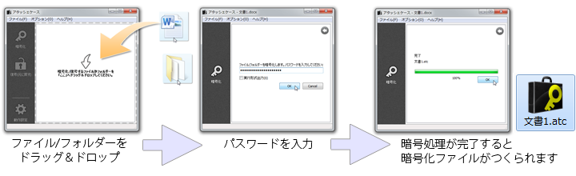
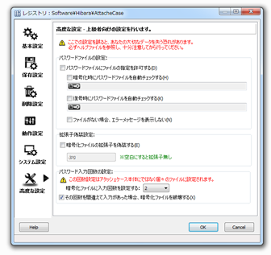

「アタッシェケース」は日常的に使うことを想定し、見た目のシンプルさと簡便な操作性に注力しながらも、 世界標準の暗号アルゴリズムを採用した強力なファイル暗号化ソフトです。

ファイルをドラッグ＆ドロップするだけで、簡単に暗号化することができ、フォルダごとドラッグ＆ドロップした場合には、 １つにまとめて暗号化ファイルを作ります（フォルダごとパックします）。 暗号化の際にはデータに圧縮がかかりますので、サイズがコンパクトになります。
復号化する（元に戻す）際にもドラッグ＆ドロップするか、ダブルクリックしてパスワードを入力するだけで、 簡単に元のファイルやフォルダに戻すことができます。
また、実行形式（*.exe）ファイルとして出力できますので、 アタッシェケースを持たない人へ暗号化ファイルを渡すことができ、復号することができます。
 保存場所の指定、処理後のファイル削除、暗号/復号毎に異なるパスワード記憶、圧縮率の調整、 パスワード入力回数による制限やデータ破壊などあり、コマンドラインからのオプションも用意されています。 これにより、細かい指定による暗号化/復号にともなうファイル/フォルダーの操作や処理が可能になっています。
暗号化アルゴリズムには、2000年10月に （NIST: http://csrc.nist.gov/）によって、 次世代暗号化標準 AES（Advanced Encryption Standard）として選定された “Rijndael（ラインダール）”を採用し組み込んでいます。 AESではブロック長が128ビット固定となっていますが、アタッシェケースではRijndaelの仕様を採用し、 鍵、ブロック長ともに256ビットになっています。
なお、乱数による初期化ベクトル（IV）を生成してからCBCモードで暗号化し、 第三者による解析も防ぐよう工夫されています。 （→詳しくは、「暗号化アルゴリズムについて」のページを参照ください。）
「アタッシェケース」は2012年7月からオープンソース化し、 ライセンスについても変更されました。詳細は、「ライセンス」のページをご覧ください。
Copyright© 2012 M.Hibara, All rights Reserved.